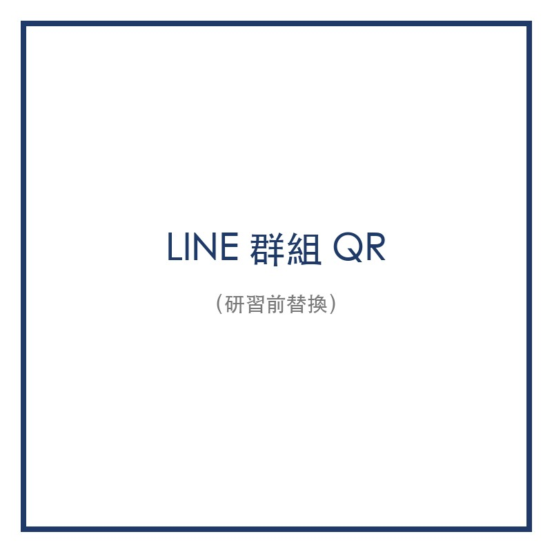
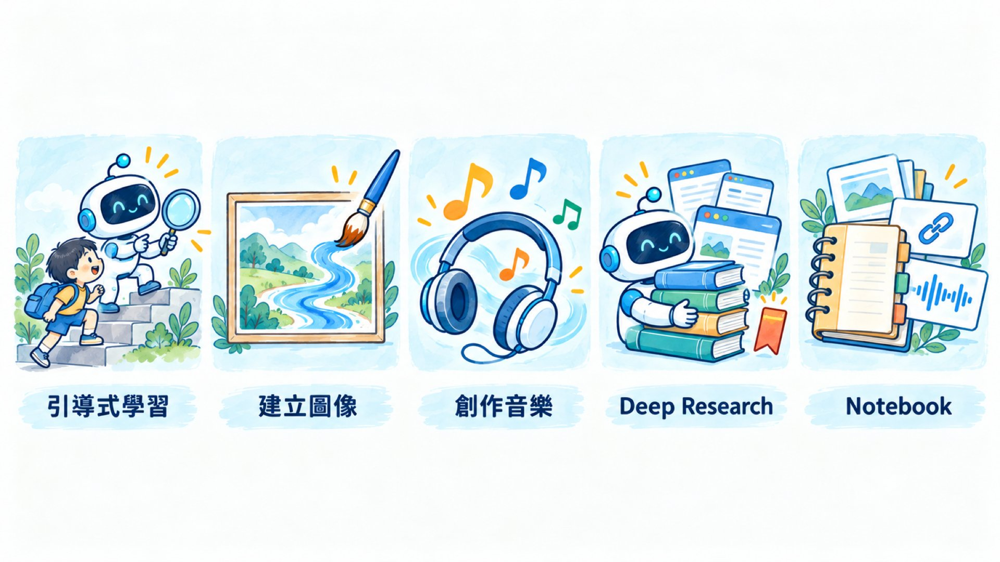

AI 應用於
教學與行政
我是周凡淇
現在
臺北市數位學習中心
系統開發組組長
以前
西湖國小老師
（114 學年度起借調中心）
先講好界線：能丟／不能丟
| ✅ 可以丟 | ❌ 不要丟 |
|---|---|
| 課文、公開教材 | 學生姓名／座號／照片 |
| 自己寫的教案 | 家長電話、真實聯絡簿與回條 |
| 去識別化的討論紀錄 | 正式段考試題 |
| 假資料 | 錄到學生聲音的課堂錄音 |
正式段考試題不丟 AI、不存開放的網路空間 → 本場不示範 AI 出段考題
五個作品
Canvas 小網頁
一個教學單元的互動小網頁
教學 Gem
一個你自己的教學 Gem
圖表報告
從 LINE 討論變出來的教學圖表報告
Gemini × 日曆
幫你記事、排提醒
ChatGPT 桌面版
裝好、按得出快捷鍵
不是看很多工具，是帶走明天就能用的東西
加入今天的 LINE 群組

- 掃 QR 加入研習 LINE 群
- 等一下的發想、連結、範本都在這裡
一起發想
「轉角遇到礙」
- ▶ 影片由講者現場播放
- 發想題：這支影片可以怎麼變成一堂「跨領域」的課？
- 在 LINE 群丟出你的點子：一則一個點子，越短越好
「礙」＝阻礙、碰撞：走廊轉角奔跑撞到人
把 LINE 討論匯出成 txt
- 1用 LINE 電腦版打開研習群 → 右上角「⋮」
- 2選「儲存聊天」
- 3存成 .txt
- 4丟給 Gemini
手機版不一定有「儲存聊天」，用電腦版最穩
兩種工具
Gemini Canvas
做出能看、能點的儀表板
會「補」老師沒說的內容
Gemini Notebook（原 NotebookLM）
只根據你給的資料回答
每句附出處
LINE 討論 → 教學設計儀表板
附件是我們老師社群在 LINE 上的課程發想紀錄。請用 Canvas 做成一個教學設計儀表板：分頁列出課程總覽、各領域可切入的點、學生探究歷程、點子統計圖表、原始討論摘要。請標出哪些是紀錄裡原本就有的、哪些是你補充的。
Canvas 成果：教學設計儀表板
- ▶ 切到 Gemini，打開剛剛做好的 Canvas
- 看分頁：課程總覽、各領域切入點、點子統計圖表
- 找找看：哪些是它補的？跟大家的原始點子對一下
- 右上角「分享」→ 取得連結 → 丟回 LINE 群
動手做 Canvas
示範課文
- 請準備一篇你這週要教的課文（貼全文或拍照）
- 沒帶課文？用課本 PDF 或教學指引的範文也可以
- 國語以外也行：數學解題、自然觀察、社會時間軸
Canvas 成果：四層次提問卡
- ▶ 切到 Gemini，打開做好的提問卡網頁
- 點一張卡 → 翻面看參考答案與提示
- 最下方「我的想法」輸入區
- 改得不滿意？直接跟它說「字再大一點」「第 3 題太難」
閱讀的四個層次 → 四層次提問卡
- 1提取訊息
- 2推論訊息
- 3詮釋整合
- 4比較評估
讓 Canvas 做成可翻面的提問卡，學生點開一層、答一題；換成你的科目也可以──數學解題步驟卡、自然觀察紀錄、社會時間軸
動手做｜15 分鐘
以下是一篇國小 ___ 年級的課文（貼上全文）。請用 Canvas 做一個互動網頁：依閱讀理解四層次（提取、推論、詮釋整合、比較評估）各出 2 題提問卡，點擊翻面顯示參考答案與提示；最後加一個『我的想法』輸入區。版面適合投影，字要大。
做完按「分享」取得連結，丟回 LINE 群
你說需求，我當場做
抽籤／分組器
貼上座號，一鍵分組
下課前 5 分鐘複習遊戲
單元重點變成搶答
課堂計時器
到了會響、字很大
小提醒：Canvas 作品存的資料換瀏覽器就讀不到，當「課堂投影工具」最穩
打造你的教學 Gem
Gem＝一個「帶著你寫好的說明書」的 Gemini
- 說明書寫一次，以後每次開都照這套規則
- 範例：設計思考 Gem──它為什麼會這樣回？
- 左側欄「探索 Gem」→「新增 Gem」
五格寫完，就是一個 Gem
1. 角色：你是國小 ___ 年級 ___ 科的學習夥伴 2. 每次回應三段：接住學生的話 → 教一小塊 → 問一個問題 3. 答不出來就降一層鷹架：換簡單問法、給選項、給線索 4. 知識庫放什麼：課文、學習單、評分規準 5. 明令不要做的事：不直接給答案、不一次問三題、不離題
Gem 直接產出學習單文件
- 1建 Gem 時在設定中啟用 Canvas
- 2請 Gem「依今天的課文產一份學習單」
- 3Canvas 文件 →「在 Google 文件中開啟」→ 可編輯、可列印
匯出成 Google 文件
- ▶ 切到 Gem 產出的學習單 Canvas
- 右上角「匯出」→「在 Google 文件中開啟」
- 到雲端硬碟找得到，可以改格式、印出來
Gem 要改成 skill 了：要注意的
- 1時程看帳號：個人 Gmail 2026/11/17 起轉；學校教育版帳號用到 2027 年 6 月
- 2自動轉換：指令和知識檔案會一起搬過去，不用重做
- 3暫時不支援：Canvas、Deep Research、引導式學習等預設工具
- 4分享連結、雲端硬碟檔案：Google 說「幾週內」補上
- 5用法變了：對話框打「/」叫出 skill，可以一次疊好幾個
今天做的 Gem 照用；指令另存一份 Google 文件備份
資料來源｜Google Gemini 說明中心：support.google.com/gemini?p=gems_to_skills
Google Workspace 串接
四步打開 Workspace 串接
- 1開啟 Gmail 智慧功能：Gmail 設定 → 確認已開啟「其他 Google 產品的智慧功能」
- 2保留活動記錄：開啟 Gemini 的對話記錄，才能存取 Workspace 內容
- 3啟用應用程式連結：Gemini 左下角「設定」→「個人化智慧服務」→「連結的應用程式」→ 勾選 Google Workspace
- 4用 @ 下指令：對話框輸入 @，選 Gmail、雲端硬碟、文件、日曆
學校帳號可能被管理員關閉，打不開時先改用個人 Gmail
一句話建好一整學期的提醒
（附上學校行事曆 PDF） 幫我把 10–11 月跟我有關的活動建到 Google 日曆，並在期中評量前兩週加一個『命題繳交』提醒。
用 @Google 日曆 確認建立結果
行政減量小幫手
口述備課 → 教案草稿
- 對著手機口述 3～5 分鐘你想怎麼上 → 上傳 → 整理成教案格式
- ⚠️ Gemini 免費版音檔上限 10 分鐘；整節課錄音改丟 Gemini Notebook
- ⚠️ 不錄真實課堂（學生聲音、姓名＝個資）
手寫單據 → 電子表格
- 拍照上傳手寫回條／學習單 → 轉成表格
- 示範用「假回條」
- 數字一定要人工核對
什麼時候用哪一個？
要能玩、要能看
→ Canvas
要有根據、附出處
→ Gemini Notebook
要固定你的判斷規則
→ Gem
界線永遠第一──不能丟的，換成假資料再丟
Gemini 工具箱

在 Gemini 輸入框按「＋」→ 選工具

Canvas 剛剛做過了 ✔ 今天再認識五個：引導式學習、建立圖像、創作音樂、Deep Research、Notebooks
引導式學習：AI 不直接給答案
- 1一步一步拆解，搭配提問、提示、圖解、影片
- 2目標是「弄懂」，不是拿到答案
- 3操作：「＋」→ 引導式學習 → 輸入問題或上傳學習單照片 → 送出
老師先扮學生試一次
（上傳一篇課文的照片） 請用引導式學習帶我讀懂這篇文章。一次只問我一個問題，依序帶我找出：主題、關鍵詞、作者用了哪些證據，最後讓我提出一個新問題。我答錯時給提示，不要直接給答案。
老師先自己扮學生試一次，看 AI 怎麼引導，再回頭改自己的提問設計
建立圖像：用文字畫圖、改照片
- 用文字描述 → 生成圖片（Nano Banana）
- 上傳照片 → 請它修改；多張照片 → 合成新圖
- 每張都有 SynthID 隱形浮水印，上傳到 Gemini 可查「是不是 AI 做的」
- 操作：「＋」→ 建立圖像 → 描述畫面 → 送出
創作音樂：三分鐘做一首歌
- 選人聲或純音樂 → 選曲風、長度 → 描述你要的歌（可附照片）
- 長度：短版約 1 分鐘／完整版約 2～3 分鐘
- 可下載 MP3 或 MP4（自動附封面）
- 操作：「＋」→ 創作音樂
音樂作品：聽聽看
- ▶ 播放事先做好的歌
- 分享連結丟 LINE 群，學生用手機就能聽
- 歌詞要先看過：它會自己加詞
Gemini Notebook（原 NotebookLM）：只根據你的資料回答
① 放資料
PDF、Word、PowerPoint、網站、YouTube、音檔、Google 文件／簡報
② 問問題
回答附引用出處，點一下就看到原文
③ 一鍵產出
語音摘要（可繁中）、影片摘要、心智圖、閃卡／測驗、簡報、資訊圖表
西湖版試試看：放入一課國語課文 → 做心智圖＋10 題測驗，給學生課後複習
https://notebooklm.googleDeep Research：幫你查資料寫報告
- 1「＋」→ Deep Research → 輸入研究問題
- 2先看它擬的「研究計畫」，可以修改 → 開始研究
- 3約 5～10 分鐘，完成會通知
- 4報告可「匯出至文件」存成 Google 文件
教學一題、行政一題
教學｜請研究國小中高年級『跨領域專題學習（PBL）』有哪些有研究支持的做法。整理台灣與國外各 3 個課堂策略，寫出適用年級、實施步驟與出處，最後做一張比較表。 行政｜整理近三年台灣國小推動『AI 融入教學』的做法與成效，附出處，給學校課程計畫參考。
⚠️ 出處一定要點開核對
Notebooks：同一批資料，一直問
- 把常用資料放進同一本筆記本：PDF、文件、圖片、錄音、雲端檔、網址
- 以後在這本筆記本裡問，Gemini 都會參考這些資料
- 和 Gemini Notebook（原 NotebookLM）自動同步
- 操作：左側欄「Notebooks」→ 新增筆記本 → 新增來源
一本筆記本，回答整學期的問題
1. 建一本「西湖課程計畫」筆記本，放入：學校課程計畫、本學期行事曆、國語課本目錄 2. 自訂指示：「只根據筆記本裡的資料回答，並標出出處。」 3. 試問：「10～11 月有哪些活動跟我的班有關？每一項老師要準備什麼？」
五個工具怎麼選？
想真的弄懂
→ 引導式學習
需要一張圖
→ 建立圖像
需要一首歌、一段配樂
→ 創作音樂
大量查資料、要附出處
→ Deep Research
同一批資料一直用
→ Notebooks
ChatGPT 桌面版
網頁版 vs 桌面版
網頁版
只認得你「貼進去」的東西
桌面版
認得你的螢幕、你的檔案、你的電腦
同一個任務跑兩遍，你自己看差別
網頁版：你把資料搬給它 桌面版：它到資料那裡做事
① 直接讀寫檔案 ② 批次處理 ③ skill 疊加 ④ MCP
它讀、它改、直接存在原處
網頁版
上傳 → 它改 → 你下載 → 你再存回去
桌面版
指定一個資料夾 → 它讀、它改、直接存在原處
例：「把資料夾裡每份段考 Word 檔加上評分規準表，另存新檔，不要動原檔」——交代時講清楚：另存新檔，還是覆蓋原檔
資料來源｜OpenAI ChatGPT 說明：learn.chatgpt.com/docs/projects（本機專案可讀寫所附資料夾）
28 份學習單 → 一張 Excel
這個資料夾有全班 28 份學習單，幫我整理成一張 Excel：座號、得分、常見錯誤。 不要改動原本的檔案，Excel 另存在同一個資料夾。 看不清楚的格子填最可能的值，字改紅色，最後一欄寫「待確認」的原因。
網頁版：一次只能上傳幾份，要分好幾批、自己再合併｜桌面版：整個資料夾交給它，一份一份做完、彙整成一張表。⚠️ 學生作業＝個資：今天示範一律用假資料
skill＝把你每次都會交代的做法，存成一份說明書
本校學習單格式
＋
三年級用字
＋
評分規準
＝
一次產出
不用每次重打
Gemini 的 Gem 也正在改成 skill，觀念一樣；桌面版：skill 放在你電腦的資料夾，自己改、自己管、可以分享給同學年老師
資料來源｜OpenAI ChatGPT 說明：learn.chatgpt.com/docs/enterprise/skills
MCP＝AI 的萬用插頭
網頁版
只能接上架好的雲端外掛
桌面版
還能接你電腦裡的工具（本機 MCP）
進階功能：今天知道有這扇門就好，設定請資訊組協助。只裝學校或官方認可的 MCP：它拿到的權限跟你一樣大
資料來源｜OpenAI ChatGPT 說明：learn.chatgpt.com/docs/extend/mcp
安裝 ChatGPT 桌面版
- 1到 chatgpt.com/download，選 Mac 或 Windows 安裝
- 2登入你的帳號
- 3Mac 按 Option + Space／Windows 按 Alt + Space，叫出小視窗
- 4上方「Chat」分頁＝聊天；「Work」分頁＝交代一整件任務
學校電腦不能裝軟體？先用網頁版聊天；讀寫檔案、批次處理要桌面版
https://chatgpt.com/download讓它看你的螢幕
- 1打開你的教案或學習單
- 2叫出小視窗
- 3按相機圖示 → 拍下這個視窗
- 4「幫我找錯字，改成更口語」
網頁版要：存檔 → 上傳 → 再問
用講的備課
- 按麥克風，口述 3～5 分鐘「下週這課想怎麼上」→ 整理成教案草稿
- ⚠️ 不錄真實課堂（學生聲音、姓名＝個資）
- ⚠️ 講完先看一遍再用，它會把你沒說的補上去
研習示範資料夾（全部假資料）
它會一步一步做，每一步都可以喊停；做完自己核對一次；第一次用，先複製一份資料夾再試
桌面版不是更安全，是更方便
分享視窗前
關掉成績表、聯絡簿、班級名單
授權資料夾
只給「那一個」
不給桌面、不給整個雲端硬碟
它真的會改名、搬、刪
確認模式不要關
能丟／不能丟的規則，一條都沒變
什麼時候開桌面版？
| 情境 | 用哪個 |
|---|---|
| 東西已經在螢幕上 | 桌面版 |
| 一整個資料夾、幾十份檔案 | 桌面版 |
| 要套自己的做法（skill）、接工具（MCP） | 桌面版 |
| Canvas、Gem、Notebook | 網頁版（Gemini） |
| 學校電腦不能裝 | 先用網頁版聊天 |
今天帶走：裝好、登入好、按得出快捷鍵的 ChatGPT 桌面版
謝謝大家！
把一整個資料夾交給它
把這些學習單依單元分資料夾，檔名改成『單元_標題』，再產一份目錄表和教學進度草稿。 先列出你打算怎麼分、怎麼改名，等我說「可以」再動手。
ChatGPT、Gemini、Claude 桌面版
| ChatGPT（當天用） | Gemini | Claude | |
|---|---|---|---|
| 叫出來 | Option／Alt + Space | Option／Alt + Space | 連按兩下 Option（Mac） |
| 看螢幕 | 相機圖示拍視窗 | 分享視窗 | 截圖、分享視窗 |
| 代勞 | Work 分頁 | — | Cowork（付費） |
| 語音 | ChatGPT Voice | 預告中 | Caps Lock 口述 |
資料來源｜2026-10-14 查證，出處見補充資料